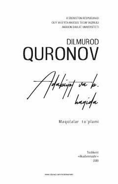

AVAdabiyotshunoslikning dolzarb masalalari va badiiy asarlar tahliliga bag'ishlangan ilmiy maqolalar to'plami.
Ushbu to'plam adabiyotshunos olim Dilmurod Quronovning badiiy talqin, kompozitsion tafakkur va tarixiy poetika masalalariga bag'ishlangan ilmiy maqolalarini o'z ichiga oladi. Kitobda o'zbek adabiyoti, xususan, Abdulla Qodiriyning «O'tgan kunlar» asari tahlili va adabiy tanqidchilikning dolzarb muammolari yoritilgan.